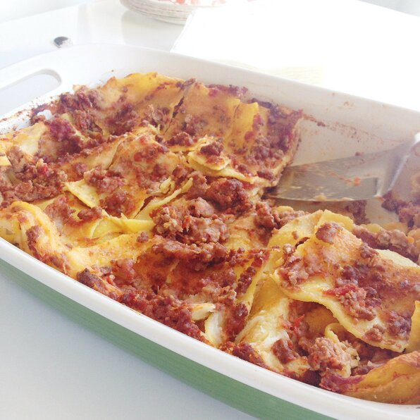

Lasagne

Description
This is the classic lasagne alla Bolognese recipe from the Emilia region in Northern Italy. The Bolognese sauce is made with a mixture of beef and pork mince. The addition of prosciutto, red wine, cinnamon, and nutmeg make it truly authentic.
Ingredients
- 2 tablespoons extra-virgin olive oil
- 1 small onion, chopped
- 1 carrot, chopped
- 1 shallot, minced
- 3 ½ ounces prosciutto, chopped
- 11 ounces ground pork
Method
- Heat olive oil in a saucepan over medium heat; cook and stir onion, carrot, shallot, and prosciutto until onion is translucent and prosciutto releases some fat, about 10 minutes. Add pork and beef; season with 1 teaspoon nutmeg, cinnamon, and salt to taste. Cook and stir over medium-high heat until browned and crumbly, about 10 minutes.
- Pour red wine over meat mixture; increase heat and cook until wine evaporates, about 3 minutes. Add tomatoes and mix well; bring to a boil, cover, reduce heat, and simmer, stirring occasionally, until tomatoes break down and flavors of Bolognese sauce have combined, 1 1/2 to 2 hours.
- Melt butter in a saucepan over medium-low heat; add flour. Whisk vigorously until mixture is smooth. Pour in milk and cook, stirring occasionally, over medium heat until white sauce thickens enough to cover the back of a spoon, about 10 minutes; season with 1/2 teaspoon nutmeg, salt, and pepper.
- Bring a large pot of lightly salted water to a boil. Cook lasagna noodles in the boiling water, stirring occasionally until tender yet firm to the bite, about 8 minutes. Drain and run under cold water to stop the cooking process. Lay noodles on a clean towel and pat dry.